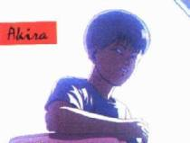
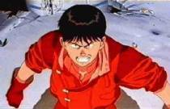
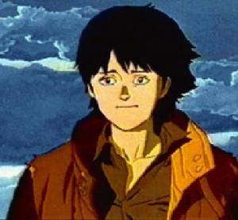
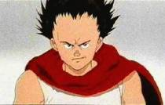

|  | Akira was the fourth child to be put under government experimentations. His powers grew out of control and he ended up destroying much of Tokyo (an event that triggered World War 3). Akira was later cut to pieces and analyzed by scientists. His pieces were then encapsulated and placed underground in a very safe and protected location. |
|  | Kaneda is one of the main characters of Akira. He is the leader of a biker gang and possesses extraordinary skill in both riding and fighting. While Kaneda serves as kind of a "hero" in this film, he isn't your typical archetype of one. Kaneda is very haughty and commanding toward his gang members (especially Tetsuo) and constantly asserts himself against the police and all other forms of authority. Kaneda's trademark is his red bike, one of the best in Neo Tokyo. |
|  | Kei is a member of Ryu's subversive, anti-government guerilla group. Though strong on the outside, she possesses a sensitive side that cringes and panics when she is forced to kill a security guard. Kei initially ignores Kaneda's advances toward her but toward the end of the movie opens up to him. Kei is also used and controlled by the children on numerous occasions, most extravagantly to fight against Tetsuo. |
|  | Tetsuo is one of the characters whom this film centers around. Tetsuo had a very rough childhood, being constantly in trouble and, always, being rescued by Kaneda. In time, Tetsuo began to resent Kaneda, who always yelled at him and gave him orders, making him feel inferior and helpless. In the beginning of the movie, Tetsuo is given telekenetic powers by the government. He uses these powers for evil and to show himself to be the most powerful around. Tetsuo eventually loses control of his powers and experiences a very disgusting transformation. |